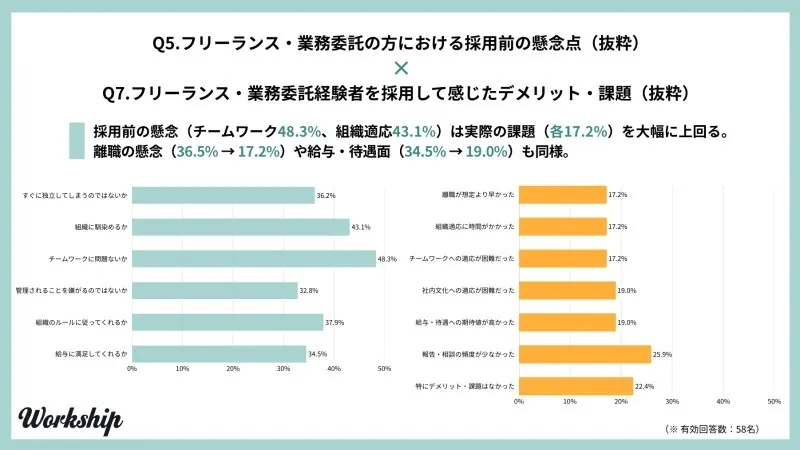
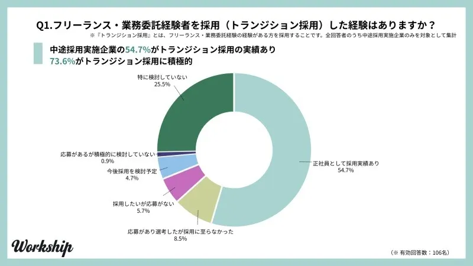
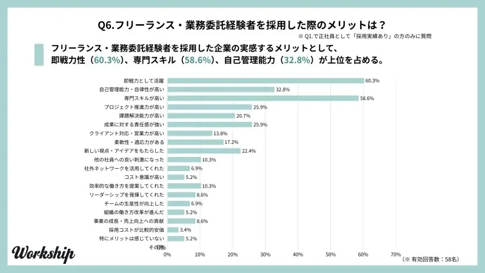

フリーランスから正社員は難しいは誤解！後悔しないための注意点と成功の秘訣

フリーランスの中には「このままで将来は大丈夫だろうか？」「もっと安定した環境でキャリアを築きたい」といった思いから、正社員への転職を検討し始める方も少なくありません。
しかし「一度フリーランスになったら、正社員に戻るのは難しいのでは？」という不安や「フリーランスは企業から不利に見られるのではないか」といった疑問を抱えている方もいるのではないでしょうか。
たしかに、フリーランスと正社員では働き方も待遇も大きく異なります。
 まつお
まつおフリーランスとして培った経験やスキルは、正社員の転職市場において強力な武器になるので大丈夫です。
多くの企業は、即戦力となる人材を求めており、フリーランス経験者は期待されています。
この記事では、人事歴30年の筆者が、フリーランスから正社員への転職は難しいという誤解を解き、あなたが抱える疑問や不安を解消します。
この記事でわかること
- フリーランスから正社員は難しくない
- なぜフリーランスから正社員を目指すのか
- 年収・待遇の違い
- フリーランスから正社員転職で後悔しないための注意点
- 正社員への応募書類の書き方
- 面接対策
- 税金や社会保険手続き
読み終える頃には、自信を持って正社員への新たな一歩を踏み出せるでしょう。
フリーランスから正社員は難しいは誤解？
フリーランスから正社員への転職を考えたとき、「一度自由な働き方を選んだ人間は、企業に馴染めないのでは？」「年齢的にもう遅いかもしれない」といった不安から、「転職は難しい」というイメージを持つ方は少なくありません。
しかし、結論から言えば、それは誤解です。むしろ、多くの企業はフリーランス経験者が持つ独自のスキルやマインドを高く評価し、「即戦力」として積極的に採用したいと考えています。
この章では、なぜ「難しい」というイメージが先行しているのか、その理由を解き明かしつつ、企業がフリーランス経験者に何を期待しているのか、そして具体的な成功法までを解説します。
- フリーランスから正社員への転職が「難しい」と言われる理由
- 企業がフリーランスに期待する即戦力スキル
- 40代・エンジニアでも転職を成功させる方法
順番に見ていきましょう。
フリーランスから正社員への転職が「難しい」と言われる理由
まず、なぜ「難しい」というイメージが存在するのか、その背景をデータから見ていきましょう。
株式会社GIGの調査によると、企業がフリーランス経験者を採用する際に抱く「採用前の懸念」が、その理由を明確に示しています。

この調査で最も高かった懸念点は「チームワークに問題ないか（48.3%）」次いで「組織に馴染めるか（43.1%）」でした。
この調査から、多くの採用担当者はフリーランスが、チームでの連携や企業文化にスムーズに適応できるかという点に、大きな不安を感じていることがわかります。
同様に「すぐに独立してしまうのではないか（36.2%）」という定着性への不安も、企業が採用を慎重に考える一因です。
しかし、これらの「採用前の懸念」は、「実際に採用した後に感じた課題よりも大幅に低い」という調査結果が出ています。
例えば「チームワーク」や「組織適応」に関する懸念は採用前には40%台だったのに対し、実際の課題としてはそれぞれ17.2%に留まっているのです。
また「離職の懸念」も採用前の36.5%から17.2%に、給与・待遇面も34.5%から19.0%に減少しています。
まつお実際は、企業側の「難しいだろう」という先入観が、実態以上に先行しているケースが多いのです。
企業がフリーランスに期待する即戦力スキル
企業がフリーランス経験者に対して懸念を抱く一方、それ以上に大きな期待を寄せているのが「即戦力」としての活躍です。
実際に株式会社GIGの調査では、全体の54.7%の企業がフリーランスを正社員として採用する「トランジション採用」の経験があると回答しています。

企業が特に評価するのは「自己管理能力」「高い専門性」「課題解決能力」といった、フリーランスとして働く中で培われたスキルです。
自ら納期を管理し、クライアントの課題を解決してきた経験は、入社後の自己管理を期待されます。
さらに企業にとっては、育成コストを大幅に抑えられるというメリットもあるのです。
特にIT業界のようにスキルと実績が重視される分野では、フリーランスとしての経験は高く評価される傾向にあります。
多くの転職エージェントがフリーランス経験者向けのサポートを提供していることからも、その需要の高さがうかがえるでしょう。
以下の資料からもわかるように、企業は実際にフリーランス採用にメリットを感じているのです。

実際に、企業はフリーランス経験者に期待しているので、自信を持って応募しましょう。
40代・エンジニアでも転職を成功させる方法
「40代からの転職は厳しいのでは」という不安があるかもしれませんが、特にエンジニアのような専門職においては、年齢はハンデになりません。
まつおむしろ、豊富な経験を「価値」として提示することで、若手にはないポジションを確立できます。
技術力だけでなく、これまでの経験で培った「経験価値」もアピールしましょう。
例えば、プロジェクトのマネジメント経験や、顧客との折衝、若手の育成といった上流工程のスキルは、40代だからこそ持つ大きな強みです。
もちろん、年下の上司のもとで働く可能性も視野に入れ、新しい環境に順応する柔軟な姿勢を示すことも大切です。
年代ごとに企業が期待する役割は変化します。
自分の経験を企業のニーズに合わせて最適化して伝えられれば、即戦力として活躍できるチャンスがあるのです。
なぜ？フリーランスから正社員を目指す主な理由
多くのフリーランスが、一度手にした自由な働き方から再び正社員への道を考えるのには、明確な理由があります。
不安定な要素を抱えるフリーランスの働き方と比較して、正社員には魅力的なメリットが多いからです。
この章では、フリーランスが正社員を目指す主要な理由を、具体的な以下のメリットとともに解説します。
- 収入の安定や社会的信用を得たい
- チームで働きキャリアアップしたい
- 税金や確定申告の負担を減らしたい
一つずつ見ていきましょう。
収入の安定や社会的信用を得たい
フリーランスから正社員を目指す最も大きな理由のひとつが、収入の安定性と社会的信用の獲得です。
フリーランスの収入は、案件の有無や景気の動向に直接影響を受けるため、月ごとの変動が大きくなるケースが少なくありません。
一方、正社員は固定給や賞与があるため、収入の見通しが立てやすく、安定した生活設計が可能です。
また、社会的信用の面でも大きな違いがあります。
正社員は、住宅ローンやクレジットカードの審査では、フリーランスよりも有利になるのが一般的です。
これは、家族や親族など周囲から安心感を得やすいという心理的なメリットにもつながります。
さらに、病気やケガで働けなくなった際のリスクに備えられ、厚生年金に加入できるなど、将来への安心材料が多いことも、正社員を目指す大きな動機となっています。
チームで働きキャリアアップしたい
一人でスキルを磨くことに限界を感じ、「チームの一員としてキャリアアップしたい」という理由で正社員を志向する人も少なくありません。
フリーランスとして活動していると、個人としての専門スキルは磨かれるものの、大規模なプロジェクトへの参画や協働経験、マネジメント経験などの機会は限られます。
正社員なら、大規模なプロジェクトにチームの一員として関わり、他の職種のメンバーと組んで、一人では得られない経験を積むことも可能です。
また、プロジェクトマネージャーや事業責任者といった、フリーランスでは挑戦が難しいポジションへのキャリアパスも開けます。
税金や確定申告の負担を減らしたい
税金や社会保険に関する事務的な負担から解放されたい、というのも切実な理由のひとつです。
正社員は会社が年末調整で代行してくれますが、フリーランスは売上や経費を自分で記録・計算し、年に一度、確定申告をしなければなりません。
また、事業所得によっては個人事業税や消費税の支払い義務も生じ、近年ではインボイス制度への対応など、会計・税務処理は複雑化する一方です。
さらに、国民健康保険や国民年金の手続きもすべて自分で行わなければなりません。
給与から天引きで会社が手続きを完結してくれる正社員と比べ、手間と時間がかかります。
フリーランスから正社員へ！年収・待遇のリアル
フリーランスから正社員への転職を検討する際、最も気になるのが「年収・待遇がどう変わるのか」という点ではないでしょうか。
目先の収入が減ることを懸念する方もいれば、長期的な安定を求める方もいるでしょう。
この章では、転職後に直面する年収や待遇の現実について、以下の3つの側面からリアルな情報をお伝えします。
- 収入が一時的に減少する可能性
- 社会保険料の負担減による手取りへの影響
- 数字に表れない福利厚生や退職金の金銭的価値
目先の金額だけでなく、長期的な視点で自分のキャリアとお金の関係を考えるきっかけにしてください。
年収は下がる？収入が一時的に減少する可能性
フリーランス時代の稼ぎ方によっては、正社員になることで一時的に年収が下がるケースがあります。
特に高単価の案件を複数こなしていた場合、会社の給与テーブルに当てはめられると、額面上の収入は減少するかもしれません。
また、企業によっては入社初年度を試用期間や評価期間と位置づけ、給与を抑えめに設定していることもあります。
さらに、副業を禁止している会社も多いため、これまでのように複数の収入源を持つことが難しくなる点も考慮すべきでしょう。
ただし、これはあくまで短期的な視点です。
正社員には定期的な昇給や昇進の機会があり、長期的に見れば収入が安定・向上していくキャリアパスを描きやすい特徴があります。
目先の金額だけでなく、数年後のキャリアを見据えた判断が必要です。
社会保険料の負担減による手取りへの影響
フリーランスから正社員になると、社会保険料の負担が変わるため、手取り額に影響が出ます。
フリーランスは国民健康保険と国民年金に加入し、保険料の全額を自己負担で支払うのが原則です。
収入が多いほど負担も大きくなります。
一方、正社員は、企業に属する協会けんぽや組合健保と厚生年金に加入します。
これらの保険料は、企業と従業員とで折半される仕組みです。
つまり、これまで全額自己負担していた保険料の半分を会社が負担してくれるようになるため、自己負担額が大きく軽減されます。
仮に、同じ額面収入であっても、手取りが増える可能性が出てくるのです。
社会保険料の自己負担が軽減されることで、月々の支出が安定し、精神的にも安心感があるでしょう。
まつお保障が手厚くなる上に、個人負担が減る点は、正社員の大きなメリットです。
おおよその給与月額から保険料がわかるので、下記のサイトからシミュレーションしてみるとよいでしょう。
【参考】全国健康保険協会｜令和7年3月分（4月納付分）からの健康保険・厚生年金保険の保険料額表
数字に表れない福利厚生や退職金の金銭的価値
正社員の待遇を考える上で、給与明細の数字に表れない「隠れた報酬」の価値も見過ごせません。
その代表格が、福利厚生と退職金です。
例えば、月3万円の家賃補助があれば、それだけで年間36万円の価値になります。
また、資格取得の費用を会社が負担してくれれば、フリーランス時代に経費で賄っていた自己投資費用が不要です。
こうした費用は、実質的な可処分所得（手元に残る金額）の増加となります。
さらに、フリーランスにはない退職金制度も、長期的には非常に大きな金銭的価値を持ちます。
iDeCoや小規模企業共済などで自分で積み立てる必要があった老後資金の一部を、会社が負担してくれるのと同じです。
目先の給与額だけでなく、こうした福利厚生が持つ金銭的価値も総合的に判断することが、後悔しない転職のポイントです。
フリーランスから正社員転職で後悔しないための注意点
正社員への転職は、収入の安定やキャリアアップなど多くのメリットをもたらしますが、同時にフリーランスならではのメリットを手放すことにもなります。
「こんなはずじゃなかった」と後悔しないためには、転職後に直面する可能性のある変化を事前に理解し、心の準備をしておきましょう。
この章では、特にギャップを感じやすい3つのポイントに絞って、具体的な注意点を解説します。
- 働き方のギャップと組織文化への適応
- 意思決定プロセスの違いと役割の変化
- 人間関係の再構築とコミュニケーション
それぞれ詳しく解説します。
働き方のギャップと組織文化への適応
最も大きな変化を感じるのが、働き方のギャップです。
好きな時間に好きな場所で働けたフリーランス時代とは異なり、正社員は基本的に決められた勤務時間と場所で働く必要があります。
また、自分で仕事を選べる環境から、会社の方針や上司の指示に基づいて業務に取り組むスタイルへの適応も必須です。
さらに、それぞれの企業が持つ独自の組織文化にも順応しなければなりません。
初めは、服装のルールや会議の進め方、コミュニケーションツールの使い方など、フリーランス時代にはなかった「暗黙の了解」に戸惑うこともあるでしょう。
まずは「郷に入っては郷に従え」の精神で、新しい環境のやり方を尊重し、吸収する姿勢が大切です。
意思決定プロセスの違いと役割の変化
仕事の進め方においても、大きな違いを実感するでしょう。
フリーランスは自分一人で即断即決できたことも、企業では稟議や会議、関係者への根回しといったステップを踏む必要があります。
このスピード感の違いに、もどかしさを感じるかもしれません。
また、自分の役割も変化します。
営業から実務、経理まで幅広く担当していた状態から、組織の一員として与えられた専門領域に集中する形になります。
その一方で、会議の議事録作成や社内イベントの準備など、専門外の業務を依頼される場面も出てくるでしょう。
まつお組織全体の流れを尊重し、与えられた役割の中で最大限のパフォーマンスを発揮する意識への切り替えが必要です。
人間関係の再構築とコミュニケーション
フリーランスは、クライアントとの関係性が主であるため、社内の人間関係に深く関わる機会は限られています。
しかし、正社員になると、上司や同僚、部下、他部署のメンバーなど、多様な人間関係を構築しなければなりません。
これは、組織の一員としての帰属意識や協力体制を築く上で非常に重要です。
これまでの人間関係とは異なる、新しい組織の中での人間関係をゼロから構築することになるため、積極的なコミュニケーションが欠かせません。
飲み会や社内イベントへの参加、業務におけるこまめな報連相などで、信頼関係を築いていく努力が必要です。
良好な人間関係は、仕事の生産性向上だけでなく、自分の居心地の良さにも関わるため、意識的に関係を構築していく必要があります。
企業文化については、入社するまでわからない場合も多く、入社してから「こんなはずではなかった」と公開するケースも少なくありません。
まつおそのような事態を防ぐためには、一旦派遣社員として働くのも方法です。
なお、正社員と派遣社員の違いやメリット・デメリットが気になる方は「【どっちがいい？】正社員と派遣社員の違いやメリット・デメリット」も参考にしてみてください。

【例文付】フリーランスから正社員への応募書類の書き方
フリーランスから正社員への転職活動において、応募書類はあなたの「顔」となり、企業への第一印象を決定づける重要な要素です。書き方を工夫すれば採用担当者の心を掴めます。
この章では、職務経歴書、志望動機、ポートフォリオという3つの応募書類について、具体的な例文や作成のポイントを交えながら見ていきましょう。
- 職務経歴書で実績をアピールする
- 採用担当者を惹きつける志望動機
- ポートフォリオで成果を「見える化」する
重要なポイントなので、しっかり押さえておいてください。
職務経歴書で実績をアピールする書き方
フリーランス経験者の職務経歴書は、プロジェクト単位で自身の役割と成果を具体的に記述するのが効果的です。
一般的な時系列の羅列ではなく、これまでに関わった案件の全体像と、そこでの具体的な貢献度を明確に伝えることを意識しましょう。
一般的な正社員の職務経歴書では、「〇年〇月〜〇年〇月 〇〇株式会社に在籍」といった形式が主流ですが、以下のようなプロジェクト単位での記述を心がけてください。
| （記入例） 【プロジェクト名】：SaaS系スタートアップ 顧客管理ツール開発案件 【期間】：2023年4月～2024年3月 【役割】：バックエンドエンジニア 【業務内容】：Ruby on Railsを用いたAPI開発、データベース設計（MySQL）、AWS（EC2, S3）でのインフラ構築・運用 【成果】：非同期処理の導入により、特定機能のレスポンスタイムを平均2.5秒から0.8秒へ改善。また、SQLのチューニングを行い、データ集計バッチの処理時間を60%削減し、サービスの安定稼働に貢献しました。 |
成果については「〜に貢献」「〜を改善」といった具体的な成果を、数字を交えて示すのがポイントです。
また、年代ごとのアピールポイントも意識してみてください。
| 30代の場合 | 即戦力としての専門性に加え、今後のリーダー候補としてのポテンシャルをアピールしましょう。 「専門性＋リーダーシップ」を意識し、チームを牽引する意欲や経験を伝えることが効果的です。 |
|---|---|
| 40代の場合 | 豊富な実務経験と定量的な実績、マネジメント能力や人脈を活かした事業貢献をアピールします。 スキルの有無だけでなく、過去の経験からどのように課題を解決し、具体的な成果を出してきたのかを明確に記載しましょう。 |
採用担当者を惹きつける志望動機の例文
採用担当者が志望動機で知りたいのは「なぜフリーランスから正社員を選んだのか」そして「なぜこの会社なのか」という2点です。
ここでは、フリーランスならではの経験をポジティブに伝え、企業に響く志望動機の例文を紹介します。
【志望動機作成のポイント】
- フリーランスの経験を通じて得た課題や学びを明確にする。
- 正社員として働くことで、その課題をどう解決したいか、どう成長したいかを具体的に述べる。
- 応募先の企業でなければならない理由を伝える。
- 自身のスキルや経験が、どのように貢献できるかを具体的に示す。
| （志望動機 例文） 私はこれまで3年間、Webデザイナーとしてフリーランスで活動してまいりました。 個人で多様なクライアントのWebサイト制作やUI/UX改善に携わり、課題解決力を磨いてきましたが、その一方で、大規模なプロジェクトでチームの一員として深く関わる機会や、長期的な視点でのサービス成長に貢献する経験が不足していることに課題を感じておりました。 貴社が手掛ける〇〇サービスは、高い社会貢献性と革新性を兼ね備えており、特に『ユーザーの声に徹底的に向き合う』という企業理念に深く共感しております。私のフリーランス時代に培った、ユーザー視点でのUI/UX設計スキルと、自発的に課題を見つけて解決する力は、貴社の〇〇サービスのさらなる発展に貢献できると確信しております。 正社員として貴社の一員となり、チームで協力しながら、より大きなインパクトを社会に与えるサービスの成長に貢献したいと考えております。 |
ポートフォリオで成果を「見える化」する方法
デザイナーやエンジニアといった専門職のフリーランスにとって、ポートフォリオはスキルと実績を「見える化」し、言葉だけでは伝えきれない魅力をアピールするための強力な武器となります。
採用担当者は、ポートフォリオを通じてあなたの実力を判断するからです。
【ポートフォリオ作成のポイント】
| 1.厳選した実績を掲載する | 多くのプロジェクトを羅列するのではなく、応募先の企業が求めるスキルや経験に合致する、最も自信のある代表作を5件程度に絞り込みましょう |
|---|---|
| 2.プロジェクトの背景と課題を明記する | 「何を作ったか」だけでなく、「なぜそのプロジェクトが始まり、どのような課題があったのか」を説明し、課題解決能力をアピールします。 |
| 3.自分の役割と貢献度を明確にする | チーム開発の場合「どの部分を担当したのか」「その結果、どのような成果を出したのか 例えば、リリースまでの期間を20%短縮した、エラー率を5%削減したなどを具体的に記載します。 |
| 4.成果を数字で示す | 「コストを〇円削減」「開発期間を〇日短縮」など、可能な限り定量的なデータで成果を示しましょう。 これは、実績に説得力を持たせる効果的な方法です。 |
| 5.プロセスを見せる | 完成形だけでなく、デザインの思考プロセスや試行錯誤の過程、技術選定の理由なども簡潔に記載すれば、思考力や判断力をアピールできます。 |
| 6.閲覧しやすい形式にする | Webサイト形式が一般的ですが、PDF形式でも構いません。 ただし、読み込み速度やUI/UXにも配慮し、採用担当者がストレスなく閲覧できるよう工夫しましょう。 |
【頻出質問】面接官の懸念を払拭する面接対策
フリーランスから正社員への転職面接では、これまでの経験に対する評価と同時に、懸念も抱いています。
そのため「なぜ正社員に？」や「また独立するのでは？」と質問をされることが多いです。
この章では、面接官の懸念を払拭し、強みをアピールするための模範回答例と、協調性・定着性を示す逆質問のコツを解説します。
- 「なぜ正社員に？」への模範回答例
- 「また独立するのでは？」への切り返し方
- 協調性や定着性をアピールする逆質問
ぜひ参考にしてみてください。
「なぜ正社員に？」への模範回答例
この質問は、あなたの転職理由のポジティブさを測るためのものです。
「収入が不安定で…」といったネガティブな動機ではなく、その企業だからこそ実現したい前向きなキャリアプランを伝えましょう。
まつお重要なのは、応募企業の事業内容と自分のスキルを結びつけて、具体的な貢献意欲を示すことです。
フリーランスとしての経験が、入社後にどう活かせるのかを明確に伝えれば、採用担当者はあなたの活躍を具体的にイメージできます。
| 【回答例】 フリーランスとして3年間、〇〇のスキルを磨き、クライアントの課題解決に貢献してまいりました。 その中で、より大規模で社会的なインパクトの大きいプロジェクトに、チームの一員として長期的に関わりたいという想いが強くなりました。 特に貴社が注力されている〇〇事業の将来性に大変魅力を感じており、私の経験を活かして事業の成長に貢献したいと考え、正社員を志望いたしました。 |
「また独立するのでは？」への切り返し方
採用担当者が最も懸念する「定着性」に関する質問です。
ここで曖昧な回答をしてしまうと「採用してもすぐに辞めてしまうのでは」という不安を払拭できません。
この質問には、その企業で実現したい長期的なキャリアビジョンを明確に伝え、腰を据えて働く意思があることを示しましょう。
フリーランスに戻る選択肢がないこと、そしてこの会社でなければならない理由を、自分の言葉で語ることが重要です。
| 【回答例】 フリーランスとしての経験を通じて、スキルを突き詰めることの重要性を学びました。その経験を活かし、まずは現場のスペシャリストとして貴社のプロダクト成長に貢献したいと考えております。 将来的には、貴社でマネジメントにも挑戦し、チーム全体の成果を最大化できるような人材になることが目標です。フリーランスでは得られないこのキャリアを、ぜひ貴社で実現したいです。 |
協調性や定着性をアピールする逆質問
面接の最後にある「何か質問はありますか？」という逆質問の時間は、あなたの協調性や長期的な貢献意欲をアピールする絶好のチャンスです。
入社後の活躍を見据えた質問を投げかけましょう。
チームの一員として貢献したいという姿勢や、長く働きたいという意思が伝わるような質問は、面接官にポジティブな印象を与えます。
| 【逆質問の例】 （協調性のアピール） ・入社後、私がチームの一員として早期に貢献するために、どのような準備をしておくべきでしょうか？ また、チーム内で特に意識されているコミュニケーションや連携の文化があれば教えていただけますでしょうか？ ・貴社で活躍されている方の共通点として、どのような資質が挙げられますか？ 私もその資質を身につけ、チームに貢献していきたいと考えております。 （定着性のアピール） ・貴社で長期的にキャリアを築く上で、入社後にどのようなスキルアップや経験を積むことが期待されますか？ 私も〇〇に挑戦したいと考えております。 ・貴社でフリーランスから正社員になられた方の成功事例があれば、その方が組織にどのように適応し、活躍されているか、具体的なエピソードを教えていただけますでしょうか？ （企業文化への関心を示す） ・貴社の社員の方々が、仕事のモチベーションを維持するためにどのような工夫をされているか、もしよろしければ教えていただけますでしょうか？」 ・リモートワークとオフィスワークの割合や、チーム内での情報共有の方法について、具体的に教えていただけますでしょうか？ スムーズな適応のため参考にしたいと考えております。 |
こうした逆質問は、あなたの企業文化への関心の高さや、チームで働くことへの意欲、そして長期的なキャリア形成への真剣な思いを面接官に伝えられます。
【漏れなく解説】フリーランスから正社員の税金・社会保険手続き
フリーランスから正社員への転職は、働き方だけでなく、税金や社会保険に関する手続きも大きく変わります。
この変更を理解しておきましょう。特に初年度は、思わぬ出費に驚くこともあるかもしれません。
この章では、フリーランスが正社員になる際に知っておくべき税金や社会保険の手続きについて、解説します。
- 住民税の支払いで注意すべきこと
- インボイス登録者が廃業時に必要な消費税の納税
- 廃業と社会保険の切替手続きの流れ
それぞれ、見ていきましょう。
初年度は高額？住民税の支払いで注意すべきこと
フリーランスから正社員になった初年度は、住民税の支払いに特に注意が必要です。
「給与から天引きされるから大丈夫」と考えがちですが、住民税は前年の所得に基づいて計算されます。
そのため、翌年の住民税が高額になる可能性があるので覚えておきましょう。
例えば、フリーランス最終年の所得が正社員としての初年度の所得よりも高い場合、正社員として給与が下がっていても、請求される住民税は高くなるかもしれません。
対策としては、フリーランス最終年の所得に応じた住民税額をあらかじめ把握し、転職後の生活費とは別に、納税のための資金を確保しておくことをおすすめします。
インボイス登録者が廃業時に必要な消費税の納税
もしあなたがインボイス発行事業者として登録している場合、廃業時に「消費税」の納税が必要になる点に注意が必要です。
課税事業者（インボイス登録者）は、廃業した年の1月1日から廃業日までに得た課税売上に対して、消費税を計算し、翌年に確定申告と納税を行わなければなりません。
例えば、2024年6月に廃業した場合、その年の1月〜6月の売上に含まれる消費税を、2025年3月末までに納める必要があります。
これを忘れると、ペナルティが課される可能性もあります。
【参照】国税庁｜インボイス発行事業者の登録を取り消す場合などに提出すべき書類
廃業と社会保険の切替手続きの流れ
フリーランスから正社員になる際は、個人事業の廃止と社会保険の切り替え手続きが必要になります。
これらは忘れないようにしましょう。事業の廃止手続きは以下のとおりです。
「個人事業の開業・廃業等届出書」を、廃業後1ヶ月以内に管轄の税務署へ提出します。
青色申告を行っていた場合は、「所得税の青色申告の取りやめ届出書」を、廃業した翌年の3月15日までに税務署へ提出しましょう。
事業の種類によっては「個人事業税の事業廃止届出書」を廃業後10日以内に、都道府県税事務所へ提出する必要があります。
なお、インボイス登録者だった場合は「消費税の事業廃止届出書」も税務署へ提出してください。
さらに、社会保険の切り替えも忘れてはいけません。切り替え手続きは以下の要領で自分で行ってください。
正社員として会社で健康保険に加入した後、14日以内に国民健康保険の資格喪失手続きを市町村役場で行います。
まつおこれを忘れると保険料を二重に請求されてしまうため、必ず手続きしましょう。
国民年金の資格喪失手続きは、厚生年金に加入することで自動的に切り替わりますが、念のため市町村役場や年金事務所への確認をおすすめします。
なお、雇用保険は、採用された会社が加入の手続きを行うため、個人での手続きは不要です。
まとめ｜自信を持って、正社員への新たな一歩を踏み出そう
フリーランスから正社員への転職は、決して「難しい」ものではありません。
企業が抱く懸念点を正しく理解し、フリーランスならではの強みをアピールすれば成功します。
また、年収や働き方の変化といった現実を事前に把握し、必要な手続きを計画的に進めることも大事です。
これらのポイントを押さえれば、あなたの市場価値は正当に評価され、理想のキャリアへとつながるはずです。
しかし、いざ一人で転職活動を始めようとすると「自分のスキルはどの企業で評価されるのだろう？」「面接でうまく懸念点を払拭できるだろうか」といった新たな不安が生まれるかもしれません。
そのような方は、転職エージェントを利用するのも方法です。
転職エージェントは無料できるうえ、仕事の紹介や面接対策などもお粉tyてくれるので利用しない手はないでしょう。
あなたの転職活動がうまくいくことを祈っています。
採用・人事やAI活用のご相談を受け付けています
記事の執筆、採用支援、AI導入支援など、まずはお気軽にご相談ください。
ご相談はこちら